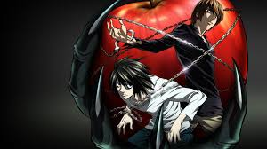
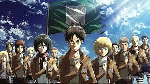

Anime & Manga Top Pick
Boochi The Rock!

Death Note


A fresh high school year always means much to come, and one of those things is joining a club. Being in a dilemma about which club to join, Yui Hirasawa stumbles upon and applies for the Light Music Club, which she misinterprets to be about playing simple instruments, such as castanets. Unable to play an instrument, she decides to visit to apologize and quit.
Scored 7.86 | Ranked #102 | Popularity #101 | Members 1,234,567 | Status Finish

According to the Republic of San Magnolia, their ongoing war against the Giadian Empire has no casualties—however, that is mere propaganda. While the silver-haired Alba of the Republic's eighty-five sectors live safely behind protective walls, those of different appearances are interned in a secret eighty-sixth faction. Known within the military as the Eighty-Six, they are forced to fight against the Empire's autonomous Legion under the command of the Republican "Handlers."
Scored 8.33 | Ranked #42 | Popularity #336 | Members 668,923 | Status Finish

Hitohito Tadano is an ordinary boy who heads into his first day of high school with a clear plan: to avoid trouble and do his best to blend in with others. Unfortunately, he fails right away when he takes the seat beside the school's madonna—Shouko Komi. His peers now recognize him as someone to eliminate for a chance to sit next to the most beautiful girl in class.
Scored 8.33 | Ranked #42 | Popularity #336 | Members 668,923 | Status Finish